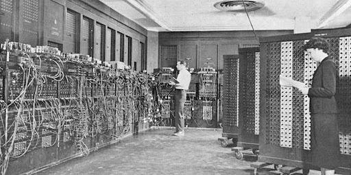

Grandes Personajes de la Computación
Introducción
Al investigar sobre los orígenes de la computación, descubrí que tres personajes resultan esenciales para comprender cómo surgió esta disciplina: Charles Babbage, Ada Lovelace y Alan Turing. Cada uno de ellos, desde su época, realizó aportaciones que marcaron un antes y un después en la historia de la tecnología. En esta página presento sus vidas y principales contribuciones. Charles Babbage es considerado el “padre de la computadora” gracias al diseño de la máquina analítica, un proyecto visionario para su tiempo. Ada Lovelace, a quien admiro por su visión innovadora, fue la primera en reconocer que esas máquinas podían utilizarse más allá de los cálculos matemáticos, anticipando así la programación. Finalmente, Alan Turing, con sus estudios sobre algoritmos y su papel en la Segunda Guerra Mundial, sentó las bases de la informática moderna y de lo que hoy conocemos como inteligencia artificial. Al reunir sus historias en este espacio, busco resaltar cómo sus ideas no solo transformaron la ciencia y la tecnología, sino que también influyeron en el desarrollo de la sociedad actual.
